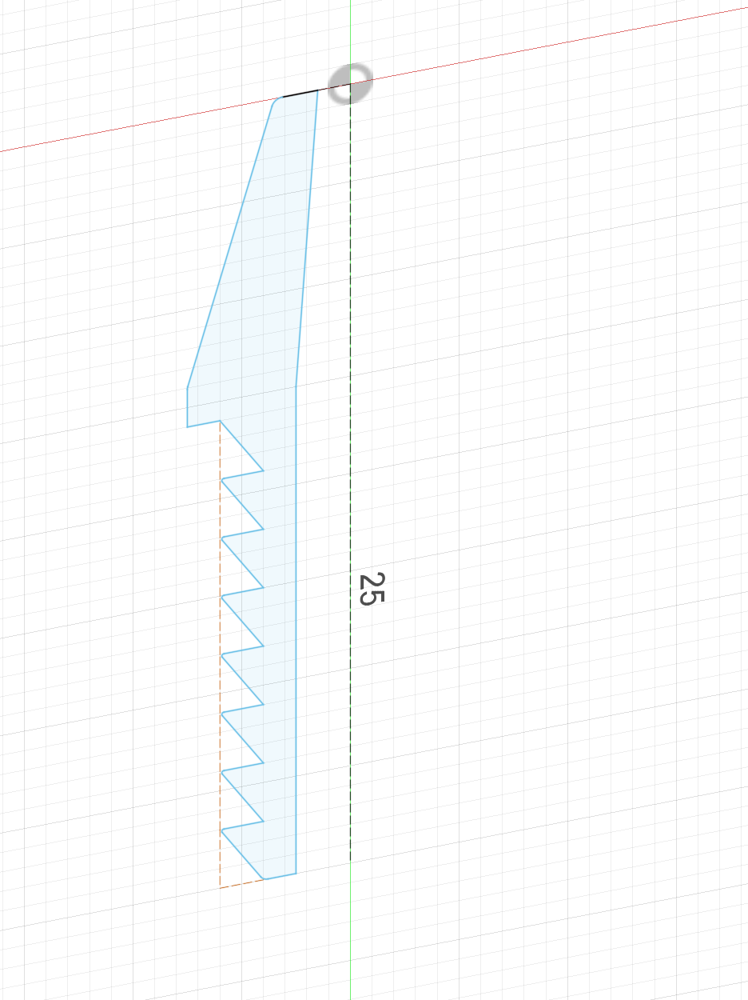
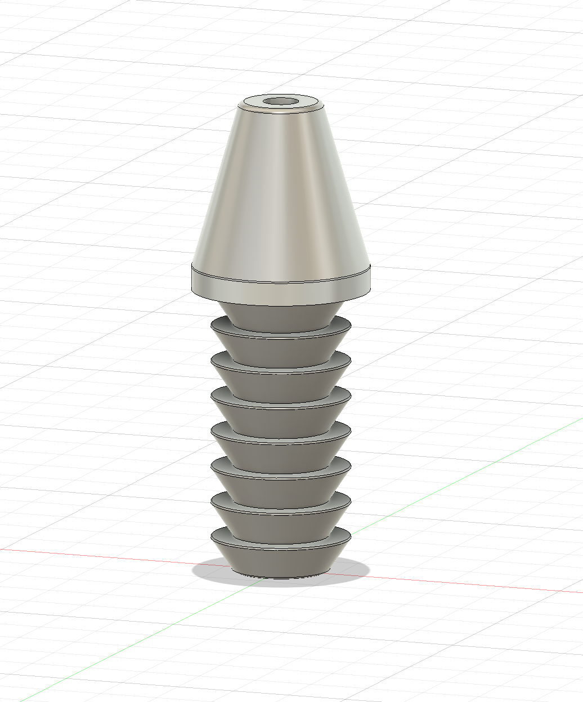

<div class="textcontainer">
<p class="margin"> </p>
<h3>Week 5: 3D Design & Printing</h3>
<h4>Assignment: Model and 3D print something</h4>


<br></br>
Taking a step towards my final project, I designed a hose barbed nozzle that can be 3D printed and attached
to the water pump's hose. This nozzle will help regulate and direct the flow of water from the pump to the target.
I designed this nozzle using the revolve feature on Fusion, sketching half of the nozzle profile and revolving it around
the center axis. I also added some fillets to smooth out the edges and make it more ergonomic.
<br></br>
<a download href='./hoseNozzle.f3d'>Download my f3d file </a>
<br>
<a download href='./hoseNozzle.stl'>Download my STL file </a>
<br>
<a download href='./hoseNozzle.gcode'>Download my gcode file </a>
<br></br>
See the fun object I scanned below! (Hint: it's a ___)
</div>